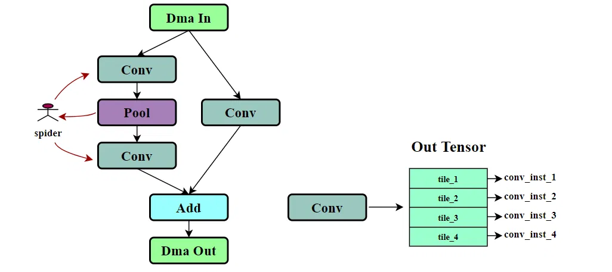
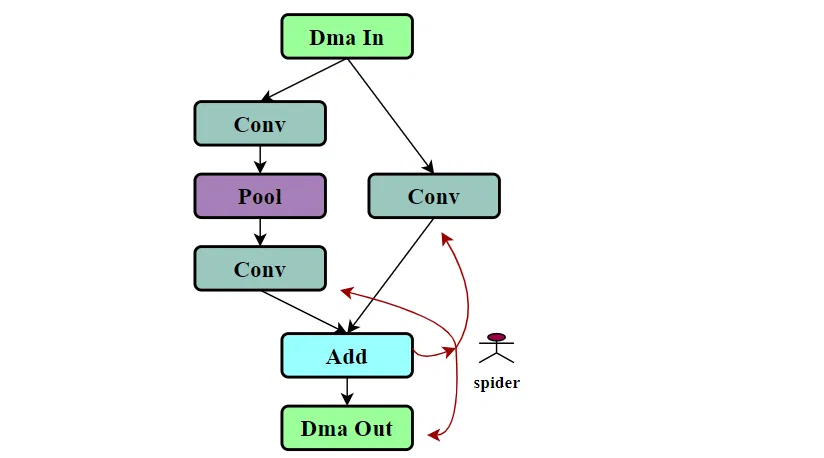
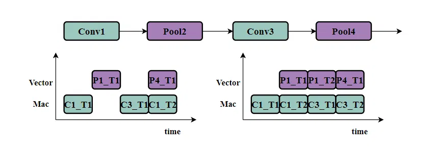
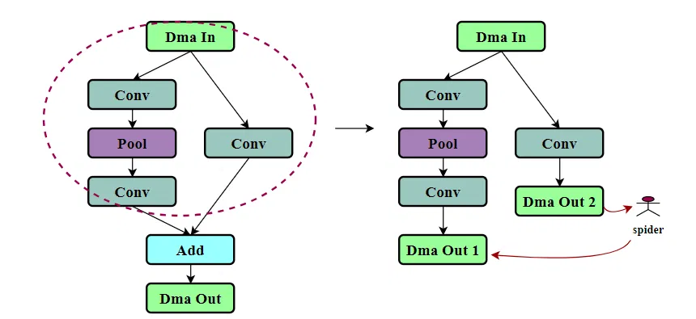
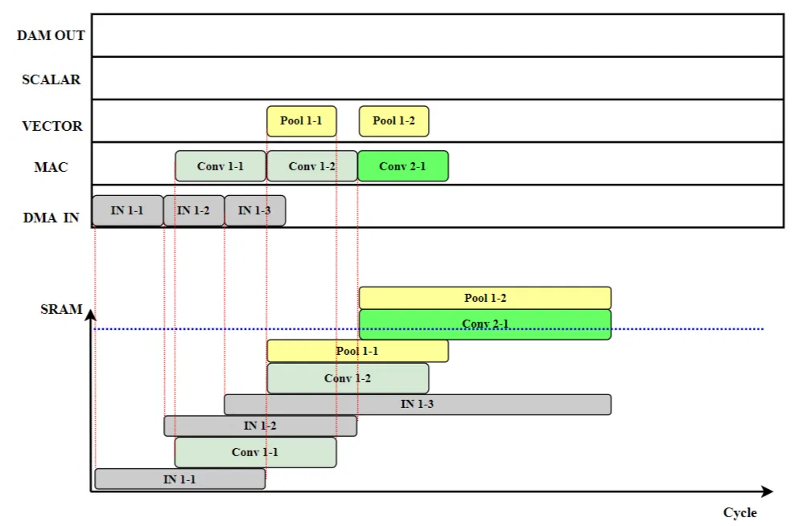
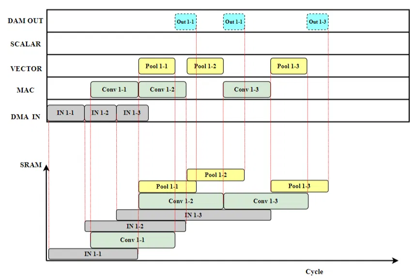
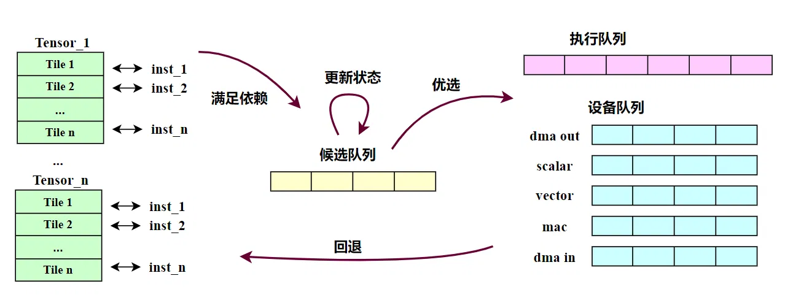
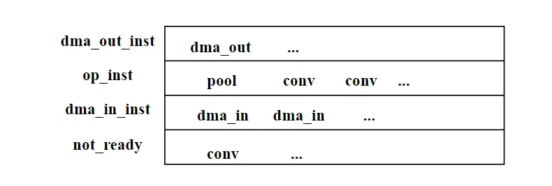

# 前言
本篇文章介绍多级流水线 Tile 调度算法
作为初学者，错误在所难免，还望不吝赐教。
# 深度优先调度生成指令
请允许叫他深度优先调度。我也不知道这种调度方式到底有没有一个官方的、或者大家默认的名称。但是从调度逻辑上，我把他叫做 ——“深度优先调度”。

如图所示。我们知道，一个算子的输出 Tensor Tile 切分成多少份，就会生成多少条指令。假设我们把上面的卷积算子的输出 Tensor 切了 4 份，那么就会有四条指令等待排序。左边所有算子的输出 Tensor 都被切成 4 份，那么就有 4*7 条指令等待排序，或者说调度。
怎么进行调度呢？现在的一个基准就是：深度优先调度。即 “只要数据足够，优先执行更深层的指令”。
算法的输入是一个图结构，此刻我们有一个指针。为了形象一点， 我们称它为一只蜘蛛。蜘蛛跳到某一个节点，需要考虑两件事情：
- 尝试生成一条指令（也许是第一条指令，也许是第三条指令，总之是该算子还没有生成的下一条指令），如果数据足够的话，则生成一条指令
inst，然后跳到下一个节点（后续节点）
2. 数据不够的话，跳向前序节点。
所以蜘蛛只有两个动作：向下 和 回溯。

再进一步，如果蜘蛛恰好正位于 Add 这种有多个前序节点的节点的时候，想要往前跳，就得多考虑一点。需要判断是缺左边分支的数据，还是缺右边分支的数据，然后再决定跳向哪个分支。
尽管也存在某个节点有多个后续节点的情况，但向后跳就比较自由一点。我们可以提前生成该图结构的拓扑排序，向后跳的时候，跳向当前节点的下一个拓扑排序节点。
如果我们是为完整的图结构进行指令调度，大部分情况下，蜘蛛生成拓扑排序最后一个节点的最后一条指令的时候，所有的指令都已经调度完成。
之后再根据指令之间的数据依赖关系，添加同步控制指令 SYNC_Inst ，以实现不同硬件的指令并行。比如 DMAEngine、MAC、Vector 硬件之间的并行。
# 优化的深度优先调度
在很多情况下，单纯的深度优先调度 ——“只要数据足够，优先执行更深层的指令”，并不能释放足够的并行性。

如上图所示，图中是个卷积和池化交错的例子，下方左边是单纯的深度优先调度，其中 “Ci” 代表 “Conv i”，“Pi” 代表 “Pool i”，“Ti” 代表第 i 个 Tile。可以看到单纯的深度优先调度，很可能会导致连续这几个 Tile 都需要等待数据，并行度不高。
右图则选择适时地生成同一算子的两条指令，这种情况下并行性就要好得多。
所以此刻蜘蛛跳到某一个节点，需要考虑三件事情：
- 尝试生成一条指令（也许是第一条指令，也许是第三条指令，总之是该算子还没有生成的下一条指令），如果数据足够的话，则生成一条指令
inst，然后跳到下一个节点（后续节点）
2. 数据不够的话，跳向前序节点。
3. 适时地跳向当前节点（继续生成本节点的下一条指令）。
所以蜘蛛有三个动作：向下、回溯 和 原地。
# 部分算子的指令调度
前面写到 “如果我们是为完整的图结构进行指令调度，大部分情况下”，最后一个节点的指令全部生成完成后，不会有指令缺失（某一层缺失指令）。因为大部分模型的输出只有一个，或者就算是多个，也是由同一个节点输出的（比如做目标检测的网络。）
但是有例外。
1. 特殊的模型。比如现在常见的多任务学习（Multi-task Learning, MTL）模型，会有多个输出，且不同的输出是由不同的节点产生。
2. 专门对部分算子进行指令调度。比如编译器在搜索最优 Layer Group 的时候，只对网络模型的部分算子进行 Tile 切分和调度。
实际上，这些多个输出节点的情况还是挺常见的。
这些情况下，深度优先调度会较快地走到最后一个 DMA Out 指令，而靠前的 DMA Out 指令与其没有数据依赖关系，就会产生指令缺失。

例如，假设以图中红圈内的节点作为 Layer Group 进行单独的 指令 调度，那么需要调度的节点会变成右侧所示，有两个 Dma Out 节点。
这时候右侧分支 Dma Out 2 对左侧分支没有数据依赖，当蜘蛛跳到右侧分支后，无法再返回左侧分支，导致左侧分支的指令缺失。
“监控所有 Dma Out 节点，当靠前的 Dma Out 节点仍缺失指令的时候，适时地跳转到前面的 Dma Out 节点”，可以是一种方法。
不过假设我们需要对更细粒度的算子进行调度，各个分支并非以 Dma Out 节点结束的时候，就要进一步监控 “前序所有缺失 consumer 节点” 的算子了。方法差不多。
所以此刻蜘蛛跳到某一个节点，需要考虑四件事情：
- 尝试生成一条指令（也许是第一条指令，也许是第三条指令，总之是该算子还没有生成的下一条指令），如果数据足够的话，则生成一条指令
inst，然后跳到下一个节点（后续节点）
2. 数据不够的话，跳向前序节点。
3. 适时地跳向当前节点（继续生成本节点的下一条指令）。
4. 是否需要跳向更前方的其他指令。
所以蜘蛛有四个动作：向下、回溯、原地 和 跳转。
# 基于候选的 Tile 调度策略
上述算法是一种可行的调度算法，但是其调度规则是已经确定好的，也就是优化后的深度优先调度。
1. 如果希望在其中增加一些经验性的调度规则，就显得难以胜任了。
2. 如果把内存管理考虑在内，如果 SRAM 空间不足了，很难灵活地调整指令调度顺序。
3. 无法确定指令调度的并行度足够高。
总之该算法的拓展性不够强，不够灵活，写起来也挺复杂。我们需要一种能够统筹管理 Tile 调度、内存管理、模拟仿真的调度算法，能够选择最优的指令调度，并能够在 SRAM 不足的时候，通过调整指令调度顺序和 Tensor 换出（Dma_out 和 Dma_in）的方式，使 SRAM 空间满足运行要求。
# 减少空间占用的工具 —— 换出和延迟
先看看指令影响 SRAM 空间占用的情况。
假设有上图这样一个简单的网络，Tile 切分策略是切 H 维度切三份。则下图中 “Conv 1-1” 代表 Conv1 的第一个切分对应的指令。其他同理。

横轴是周期，上方纵轴是不同的设备，有 DMA、MAC 等设备。下方纵轴是 SRAM 空间。上方展示了指令在不同设备上的排布调度，下方是对应的内存占用。假设在排到 “Conv 2-1” “Pool 1-2” 的时候，没有足够的空间开辟内存，我们有哪些工具可以处理这种情况呢？

上图展示了减少 SRAM 占用的方法，即换出（SPILL）操作和推迟操作。即将 “Pool1” 算子占用的空间换出到主机内存中（图中给 Pool1 算子添加 DMA Out 节点），“Pool1” 之后的节点在对应的数据重新加载到 SRAM 之前，不会进行调度；此外，还可以通过延迟某些指令的周期，来复用释放掉的内存，如图中延迟 “Conv 1-3” 的执行，使其能够复用 “Conv 1-2” 所占用的空间。
# 如何实现该算法
第一步，根据 Tile 切分策略，提前生成所有指令，并统计 Tensor 引用计数、指令数据依赖等。提前完成的事情越多，越能减轻后续步骤的压力。

第二步，初始化，将图结构中 Load 节点（可能有多个）中的首个 DMA In 指令添加到候选队列。
第三步，更新候选队列中的指令状态，即假设将候选队列中的指令 Inst 添加到执行队列，那么它的运行周期、空间分配信息是怎样的。
第四步，制定规则，选择一条指令从候选队列移动到执行队列和设备队列，并更新设备队列状态。
第五步，当前情况下，将所有满足数据依赖的指令添加到候选队列。
第六步，回到第三部，循环执行，直到所有指令添加到执行队列。
# 按照什么样的规则选择候选队列中的指令

这算是经验性的规则。可以将候选队列中的所有指令分成四个优先级，分别是 dma_out 指令、OP 指令、dm_in 指令、not_ready 指令。not_ready 指令指的是候选指令中，无法分配足够 SRAM 空间以满足执行的指令。
这四类指令的优先级依次降低。
在同类指令里面，优先选择模拟仿真中启动时间更早的指令。那如果两条指令启动时间也相同呢？选择拓扑图更深的指令。
若是前三个优先级都没有指令，只有 not_ready 指令，那意味着空间已满，需要回退状态，增加换出操作了。
# 后记
我也不清楚以上内容有多少错误，有哪些不足，不过这些东西总会在前行的道路上逐渐出现，并得以解决。
本博客目前以及可预期的将来都不会支持评论功能。各位大侠如若有指教和问题，可以在我的 github 项目 或随便一个项目下提出 issue，并指明哪一篇博客，看到一定及时回复！